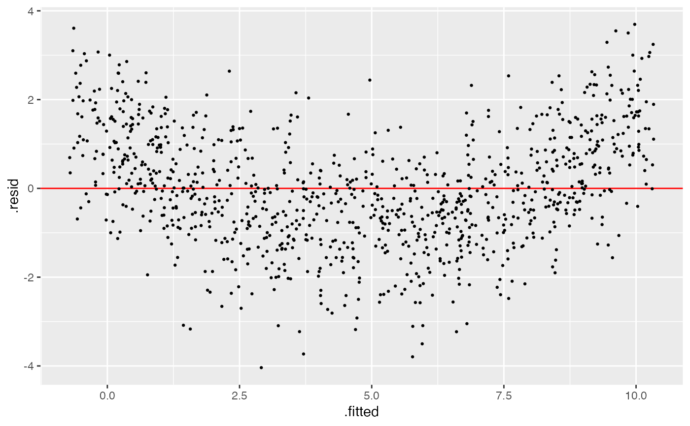
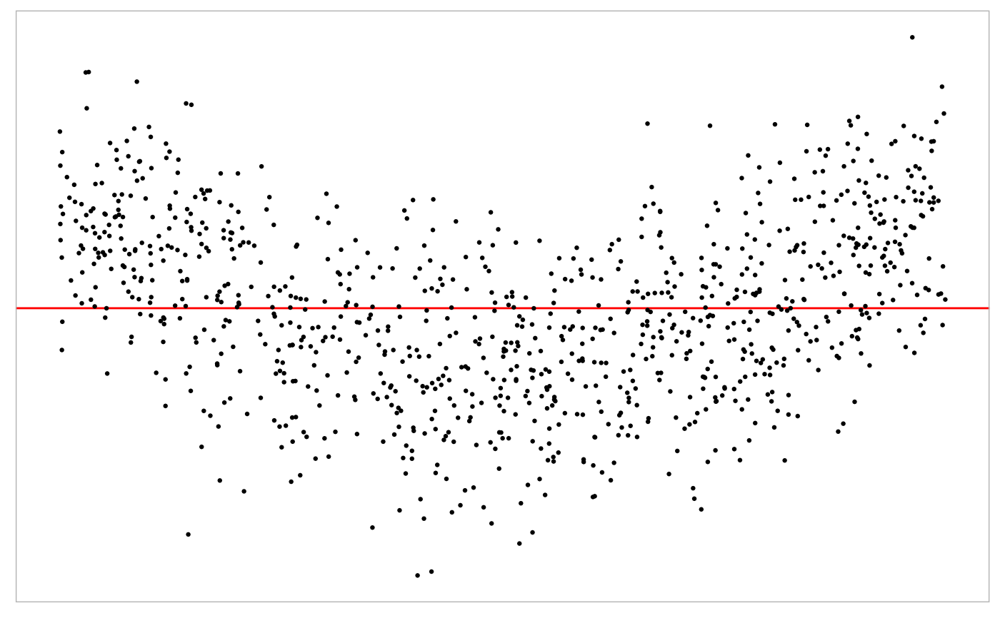

This function generates plot for fitted model.
Data frame. A data frame containing correspoding variables.
Character. "resid": VI_MODEL$plot_resid. Default is
type = "resid".
ggtheme. A ggplot theme object.
Numeric. Alpha of dot. Value between 0 and 1. Default is 1.
Numeric. Size of dot. Value between 0 and 1. Default is 0.5.
Boolean. Whether or not to remove the axis. Default is
remove_axis = FALSE.
Boolean. Whether or not to remove the legend. Default is
remove_legend = FALSE.
Boolean. Whether or not to remove the grid lines.
Default is remove_grid_line = FALSE.
Boolean. Whether or not to add a zero horizontal line.
Default is add_zero_line = TRUE.
A ggplot.
# Instantiation
x <- rand_uniform()
e <- rand_normal()
test <- vi_model(prm = list(x = x, e = e),
prm_type = list(x = "r", e = "r"),
formula = y ~ 1 + x + 10 * x^2 + e,
null_formula = y ~ x,
alt_formula = y ~ x + I(x^2))
# Residual plot of the null model
test$plot(test$gen(1000, fit_model = TRUE), type = "resid")

# Customize the plot
test$plot(test$gen(1000, fit_model = TRUE),
type = "resid",
theme = ggplot2::theme_light(),
remove_axis = TRUE,
remove_grid_line = TRUE,
add_zero_line = TRUE)
